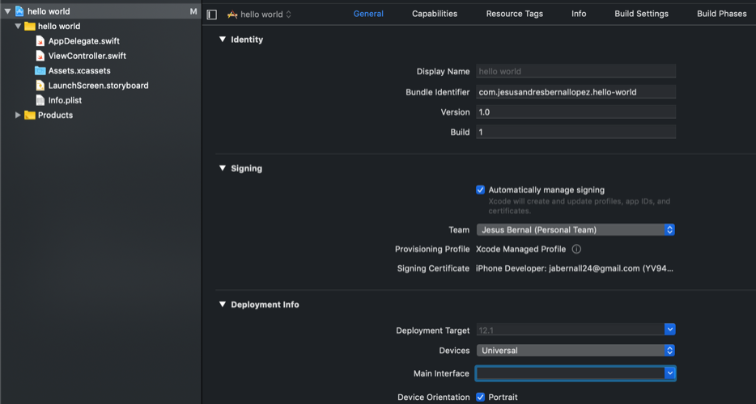
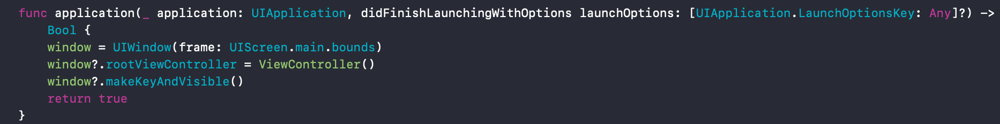
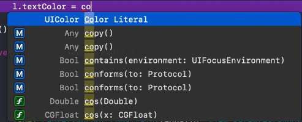
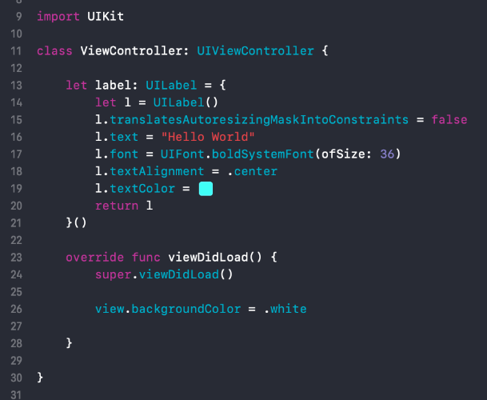
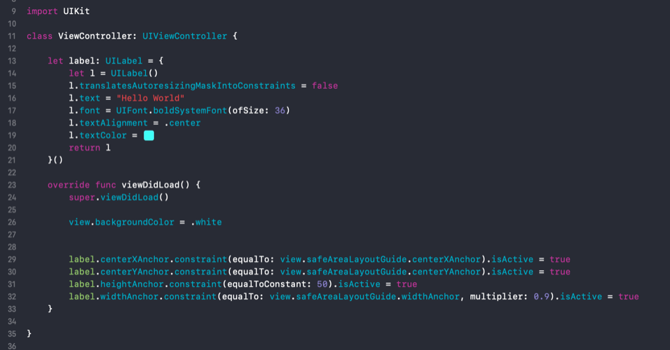
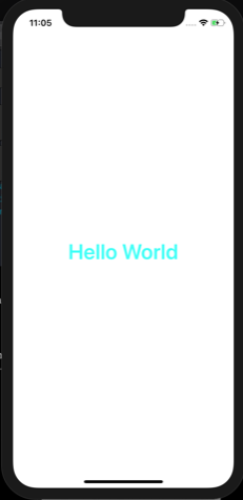

For your first app we will be making the infamous hello world app as is tradition. Let's get started with launching Xcode.
Click on Create a new Xcode project
We will be making a single view application.
In product name go ahead and put the name of the app. I will call this hello world.
Go ahead and put down your organization name. For me it is just my name. It does not matter what it is.
The organization identifier is usually com.yourOrganizationName
Swift as your languague and leave the three boxes unticked we will not be working with any of them.
Finally go ahead and save it where ever you want and click create.
Before we do anything, let's go ahead and run our application. If all is going well, we should see a white screen.
To run the application go ahead and click on the little play button near the top left.
You may be asking yourself, what are we going to make? Well, we will be making a simple Hello World app. To do this in storyboard
it is dragging and dropping onto it and it is not really programming in my opinion. We will be doing the app fully programatically. By doing the app
fully programatically it will make working on a team easier because changing one little thing in the storyboard changes the whole storyboard file making it
very difficult to resolve those conflicts. Also, you are trying to learn to program so it is a good idea to get used to looking at code. So let's get started.
Double click on the Main.storyboard file and delete it(move to trash).

Delete the 'Main' from the Main Interface.
Head over to your AppDelegate.swift file and inside your didFinishLaunchingWithOptions funtion and write the following three lines.
These three lines tells our program, 'Hey, when you start up head over to ViewController.swift file'. When working
fully programatically these three lines are extremely important or else our app will crash.

Now when you run it you should see a black screen.
Go to your ViewController.swift file and inside viewDidLoad() we will be changing the background
color to white by typing: view.backgroundColor = .white below super.viewDidLoad()
Run it and your screen should be white again as when we started.
Now let's make the label that will say "Hello World"
Let's start by making out label a constant, giving it the name label and telling Xcode we want it to be
a UILabel. To do so type the following: let label: UILabel = { }().
Inside the curly braces({}) is where the information about our label goes. Let's start off by typing in
the following two lines let l = UILabel() and return l. The first line
creates a constant l and sets it equal to a UILabel() the second line returns the label to our constant label.
Next we need to tell Xcode we will be using auto layout for that just type the following:
l.translatesAutoresizingMaskIntoConstraints = false in between the two lines we just wrote.
If you are interested in learing more about translatesAutoresizingMaskIntoConstraints you can head over to the
Apple Documentation.
Above our return, let's give our label some text, l.text = "Hello World".
Below our text let's make our font a bit bigger, l.font = UIFont.boldSystemFont(ofSize: 36)
Now let's center it, l.textAlignment = .center
Let's give our text some color, l.textColor = and start typing in color literal,
you will see auto complete com up. Go on the one that says Color Literal and hit return. Double click on the new square
on the right side of the equal sign and choose your favorite color.

Your code should look like this.

However, we are not done because if your run the program you will still see the white screen. Where the
hell is our label you may ask? Well it is our fault because we have yet to add it to our view. To add it to our view it
very simple actually just by doing the following: view.addSubview(label) below
view.backgroundColor = .white inside of viewDidLoad. However, we also need to give our label
constraints. We need to contraint the top, bottom, left(leading) and right(trailing). However in our case our top and bottom
will be centering in the x and y positions. We will anchor it by doing the following:

Now when you run it, you will see "Hello World" printed out on the simulator.

Congrats you have completed your first app, for an app that is a little bit more complex, head over
here.